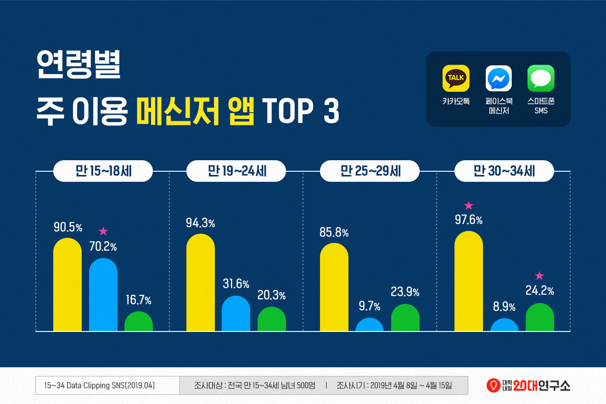
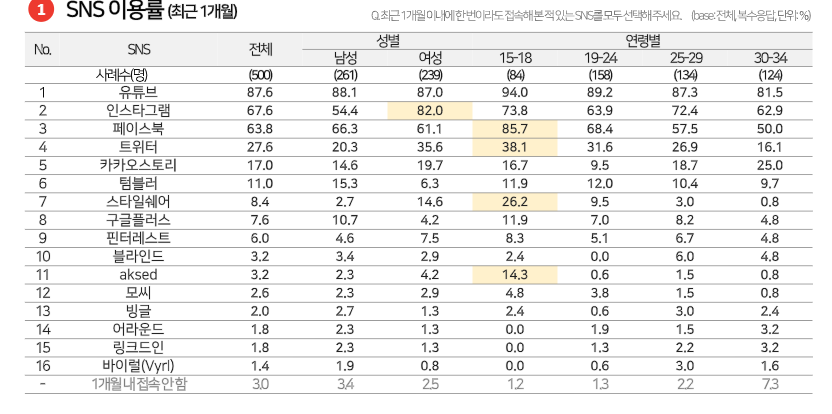
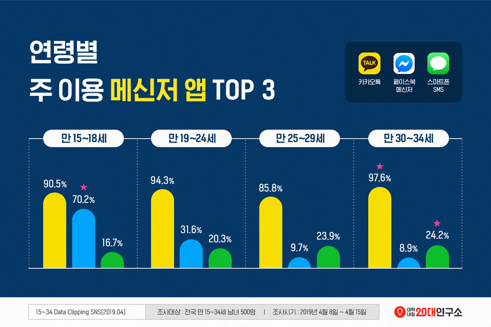
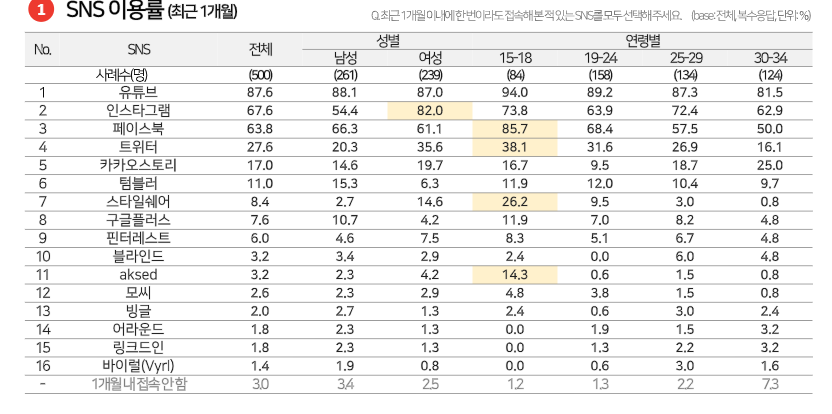
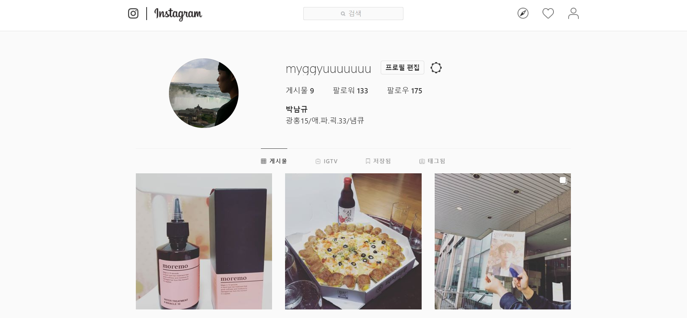

방송프로그램 편성시간당 총량제
유료방송의 경우 가상광고 및 간접광고의 허용시간 : 100/5에서 100/7로 확대.
운동경기 중계에만 허용하던 가상광고를 오락/스포츠 분야 보도에 관한 방송프로그램에도 허용.
지상파 TV 콘텐츠 파워의 약화에 주목.
SMR의 증가추세 / PCM의 등장.
참고: TV광고는 CPM과 CPRP를 고려할때 매우 효과적인 매체임.
유료방송의 경우 가상광고 및 간접광고의 허용시간 : 100/5에서 100/7로 확대.
운동경기 중계에만 허용하던 가상광고를 오락/스포츠 분야 보도에 관한 방송프로그램에도 허용.
CPM: cost per mill : 천명에게 도달하는 광고비용
CPRP : cost per rating points : 시청률1%를 올리기 위한 비용
cpv : cost per view : 시청한 횟수에 따른 비용
cpa : cost per action : 액션에 따른 비용
cpc : cost per clicks : 클릭에 따른 비용
 



기획서, 과제할때 편리한 사이트들
KOBACO : 국내 지상파TV 미디어렙으로서 TV시청률과 라디오 청취율에 관한 정보가 있다.
대학내일 연구소 : 20대 소비패턴, 미디어 이용패턴에 대한 자료 사용가능.
DMC리포트 : 각 연령별 소비패턴, 미디어 이용행태에 대한 자료 사용가능
The PR : 기획서 작성시 로직에 대한 레퍼런스를 얻을 수 있다.
NBA 보는것 or 농구하는것
NBA는 꼭 빠지지 않고 챙겨보는 편입니다.
50초 쯤에 농구하는 제가 나옵니다(20살) .
영상끝날쯤에 제가 나와서 동영상 게시했습니다(24살).
SNS계정
